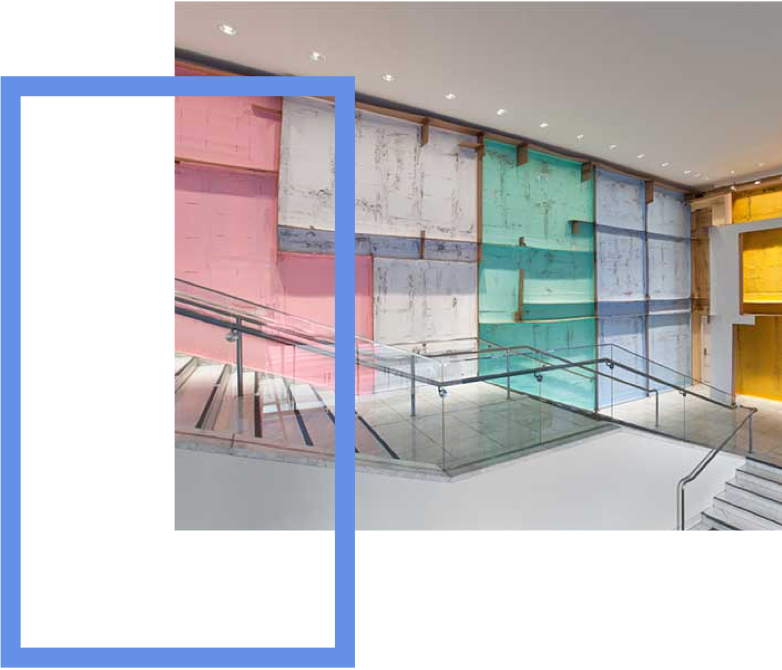

6918 S. Dorchester | Chicago, IL 60637
STONY ISLAND
ART BANK
STONY ISLAND
ART BANK

The Stony Island Arts Bank will serve as a platform for site-specific commissions and exhibitions, a venue for artist and scholar residencies, and a home for Rebuild's archives and collections. Designed by William Gibbons Uffendell and built in 1923, the bank at 68th and Stony Island was once a vibrant community savings and loan. But by the eighties, the branch had closed and the building remained vacant and deteriorating for decades. When it reopens in the fall of 2015, the radically restored building will serve as a space for neighborhood residents to preserve, access, reimagine and share their heritage - and a destination for artists, scholars, curators, and collectors to research and engage with South Side history.
—
Hours & Directions
6760 S.Stony Island Avenue
Chicago, IL
M-F
Saturday
Sunday
Hours & Directions
6760 S.Stony Island Avenue
Chicago, IL
M-F
Saturday
Sunday
Past Exhibition
Carlos Bunga at the Stony Island Arts Bank
October 3, 2015 - January 3, 2016
As part of the grand opening of the Stony Island Arts Bank, Rebuild Foundation is proud to present a site-specific installation by Portuguese artist Carlos Bunga.Carlos Bunga creates process-oriented works in various formats -- sculptures, paintings, drawings, performances, video, and above all in situinstallations that refer to and intervene in their immediate architectural surroundings.
Learn more

Upcoming Exhibition
Upcoming Programs
Past Programs